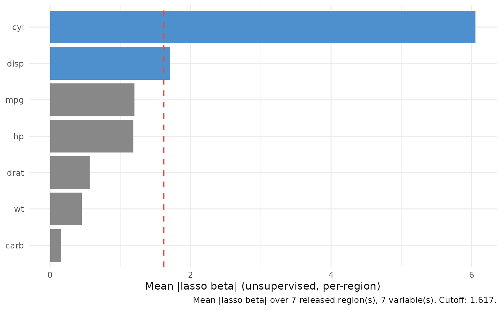

Horizontal bar chart of the mean absolute lasso coefficient \(\mathrm{mean}(|\hat{\beta}|)\) per variable from an unsupervised varPro fit, sorted descending so the eye lands on the top variable first. Bars are filled blue above the selection cutoff, gray otherwise, with a dashed red line at the cutoff.
Usage
# S3 method for class 'gg_beta_uvarpro'
plot(x, ...)Arguments
- x
A
gg_beta_uvarproobject fromgg_beta_uvarpro().- ...
Not currently used.
Reading the chart
Each bar is the average magnitude of a per-region lasso coefficient for
that variable, computed by varPro::get.beta.entropy() over the
unsupervised entropy regions of a varPro::uvarpro() fit. There is no
response: the score measures how strongly a variable is reconstructed by
the others within released regions, i.e. an unsupervised
importance / redundancy signal rather than a predictive one. As with
gg_beta_varpro(), the numeric scale carries the predictors' units, so
bar lengths are comparable within a data set but not blindly across
variables on very different scales.
Examples
# \donttest{
if (requireNamespace("varPro", quietly = TRUE)) {
set.seed(1)
o <- varPro::uvarpro(mtcars, ntree = 50)
plot(gg_beta_uvarpro(o))
}

# }